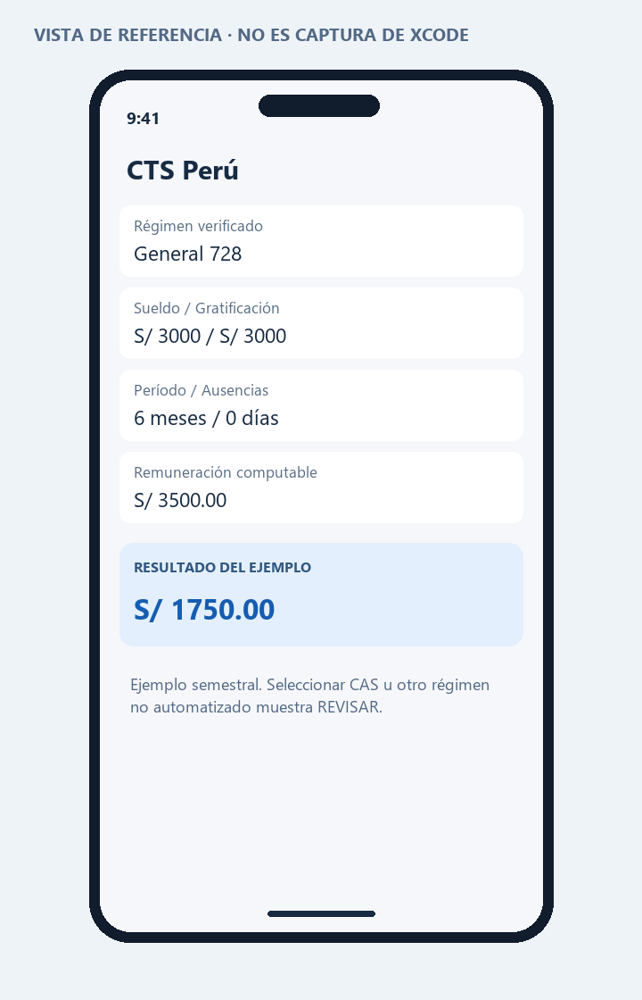

PROGRAMACIÓN EN MÓVILES AVANZADO · S08
06 · CTS Perú: uso, reglas y límites
Actualización del 28/10/2026: consulta el README de Semana10 para el Excel actual y los nuevos modos de gratificación/depósito de SwiftUI. La documentación de celdas siguiente corresponde al Excel ampliado anterior.
La guía pide código e interfaz para CTS. Esta entrega añade, por solicitud del usuario, Excel dinámico, requisitos y casos probados. Investigación con corte 27 de octubre de 2026; no se afirma cobertura de todos los regímenes ni certificación oficial.
Qué abrir
Fórmula explicada
RC = principal mensual + asignación familiar + otros fijos computables
+ promedio complementario admitido
+ gratificación percibida / 6 + otros semestrales / 6 + anuales / 12
Días netos = meses completos × 30 + días adicionales − días no computables
CTS general = RC × días netos / 360
CTS pequeña = mínimo(CTS general × 0.5, RC / 30 × saldo del tope en días)
Componente agrario = básica mensual validada × 0.0972 / 30 × días pagables
RC significa remuneración computable: la base para el beneficio. La fórmula de la guía se obtiene cuando solo hay sueldo y gratificación, meses completos y régimen general. La frase de la guía que vuelve a definir “gratificación” como un sexto es ambigua: aquí se ingresa el monto completo realmente percibido y se divide una sola vez. La fórmula por meses y días se sustenta en MTPE: CTS por meses y días.
Ejemplo explicado de principio a fin
Trabajador general, sueldo S/ 3000, gratificación computable percibida S/ 3000, seis meses y ninguna ausencia no computable. Primero: 3000/6 = 500. Después: RC = 3000+500 = 3500. Finalmente: 3500×180/360 = S/ 1750.00. Si tiene cinco días no computables, el tiempo baja a 175 y obtiene S/ 1701.39.
Usar el Excel sin perder fórmulas
- En CTS!B10, elige el régimen. Confirma su aplicación en B11 usando contrato e historial, no solo el nombre de la empresa.
- Revisa mes mínimo, jornada, RIA y cese en B12:B15.
- Ingresa el tiempo ya validado en B16:B18. O activa Fechas en la hoja Fechas y gratificación: ingreso, inicio del semestre y corte/cese. El tiempo automático sustituye B16:B17 y el mes mínimo; las ausencias siguen siendo datos clasificados por el usuario.
- Completa B19:B24: usa la remuneración de abril/octubre o del cese. Para noviembre de 2026, el semestre completo es mayo–octubre.
- Si la principal es variable, selecciona Variable en B25 y registra el total y el divisor diario sustentado en B26:B27. Semestre completo: 180 como equivalencia de seis meses; período menor: promedio diario previamente validado.
- En D10:I10 registra un mismo concepto complementario, por ejemplo horas extra, en cada mes. No mezcles conceptos para cumplir la regularidad. Cero es ausencia de pago; celda vacía exige completar datos.
- Para pequeña empresa, registra en B28 el saldo validado del tope de 90 remuneraciones diarias. Los retiros bancarios no restauran el tope.
- Lee el estado y el importe arriba. B36:B47 permite seguir las operaciones. Para agrario solo se usan B30:B31, después de seleccionar su modalidad.
Para probar el recálculo: cambia B19 de 3000 a 4000, manteniendo B22 en 3000. El resultado debe pasar de S/ 1750.00 a S/ 2250.00. Luego borra B19: debe mostrar datos inválidos, no cero. Restablece 3000. Las hojas de casos conservan la evidencia de la ejecución original, no representan tus entradas actuales.
Automatización añadida y comprobada
La hoja Fechas y gratificación conserva por defecto el modo Manual. Selecciona Fechas en B5 para derivar meses, días y mes mínimo desde B6:B8. El intervalo incluye ingreso y corte. El inicio semestral debe ser 1 de mayo o 1 de noviembre; el corte debe pertenecer a ese semestre. Los meses completos valen 30 días. Inicio día 31 o febrero parcial producen REVISAR FECHAS y exigen tiempo manual validado: no se presenta una convención no comprobada como regla universal. No se automatizan arrastres.
Selecciona Histórica en B10 para calcular gratificación: RC histórica × (meses calendario completos / 6 − días no computables / 180), con factor 0.5 para pequeña REMYPE. La RC y los meses completos se ingresan con sustento histórico; no se deducen del sueldo actual ni del tiempo CTS. Julio corresponde a enero–junio; diciembre a julio–diciembre. B14 exige confirmar coincidencia con lo realmente percibido. Si difiere, usa el importe de boleta en modo Manual. Se redondea la gratificación al céntimo antes de integrarla como pago percibido.
SwiftUI incluye los mismos modos; las fechas se escriben como AAAA-MM-DD. Un corte futuro es proyección. Un resultado válido no acredita por sí solo clasificación de ingresos, ausencias o régimen.
Base de gratificaciones y meses calendario: MTPE, Ley 27735 y DS 005-2002-TR. Descuento por días no computables: artículo 3.4 del reglamento.
Ver la hoja del asistente renderizada desde el Excel entregado.
Qué importes no mezclar
La base se forma con conceptos clasificados previamente como computables. No introducir como sueldo los reembolsos, viáticos sustentados, condiciones de trabajo, utilidades ni liberalidades ocasionales que correspondan a exclusiones legales. La bonificación extraordinaria asociada a la gratificación no se suma a esta. Los conceptos de periodicidad superior a un año quedan fuera; otros períodos o pactos especiales necesitan clasificación. Referencia de la selección de componentes: TUO y Reglamento de CTS, DS 001-97-TR y DS 004-97-TR.
Entradas que requieren criterio
El principal variable usa promedio, no la exigencia de tres meses del complemento variable. Para el complemento, se verifica percepción en al menos tres meses; cuando el período es incompleto se divide entre la duración a liquidar conforme al artículo 6 del reglamento. El modelo admite un tipo de complemento; para varios se debe evaluar cada uno por separado. MTPE: preguntas frecuentes laborales, versión 5.
Las ausencias médicas, maternidad, vacaciones y licencias no son intercambiables. No se restan automáticamente todos los días sin asistencia. El operador debe registrar solamente días no computables y revisar el límite y período legal de enfermedad. MTPE: jornada, tiempo mínimo y días computables, 24/04/2026.
Fechas y actualización de parámetros
La RMV publicada para octubre es S/ 1230 y la asignación familiar vinculada, cuando corresponde, S/ 123. Una gratificación de julio efectivamente pagada con la remuneración anterior no se reemplaza automáticamente por la de octubre. Por ello la gratificación se ingresa por separado. RMV desde octubre 2026, El Peruano, 01/10/2026.
Para el depósito de noviembre de 2026, el vencimiento reportado es el lunes 16 de noviembre porque el día 15 cae domingo. Al 27 de octubre el semestre aún no ha cerrado: un ejemplo de seis meses es una proyección hasta el 31, no una liquidación ya devengada en su totalidad. CTS de noviembre 2026: vencimiento y reglas.
La disposición temporal del fondo hasta el 31/12/2026 se refiere al retiro y no cambia el cálculo del beneficio. Congreso: Ley 32322 y disponibilidad hasta 31/12/2026.
Limitaciones expresas
No calcula intereses bancarios o por mora, embargos, conversiones de moneda, reintegros históricos, acuerdos colectivos, rectificación de planillas, arrastres de períodos, cambios de régimen ni todas las reglas de servidores públicos o sectores especiales. No determina si un trabajador fue correctamente adscrito a REMYPE. Para datos fuera de alcance devuelve revisión o exige entradas sustentadas; no presenta una cifra como liquidación oficial.
El tope MYPE se aplica sobre el saldo de remuneraciones diarias validado por el operador. Si hubo cambios salariales, no se debe convertir mecánicamente un saldo bancario en días. El archivo no reconstruye ese historial.
Verificación realizada
Se cambiaron las entradas de la misma hoja de cálculo en 73 casos y se recalculó cada vez. Los resultados se compararon con valores esperados previamente definidos. Se revisaron fórmulas, entradas vacías, límites y ausencia de errores de cálculo. El archivo se exportó a .xlsx y sus hojas se revisaron visualmente. No se ejecutó Excel de escritorio ni Xcode en este equipo.
Código y ejecución
Abre Proyecto/CTSPeru.xcodeproj en Xcode 15 o posterior, con un simulador iOS 17 o posterior. El código principal está en Proyecto/CTSPeru/CTS.swift. Consulta las instrucciones de ejecución.
La estructura de proyecto está preparada. La compilación y las capturas reales quedan pendientes de ejecutar en una Mac; no se presentan como pruebas realizadas.
Vista de referencia
Representación de la interfaz y los datos de ejemplo. No es una captura del simulador. La vista ejecutable se encuentra en el archivo SwiftUI y en su #Preview.
